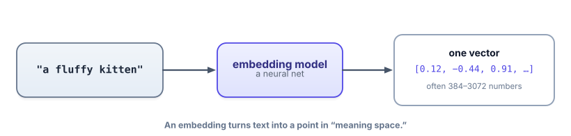
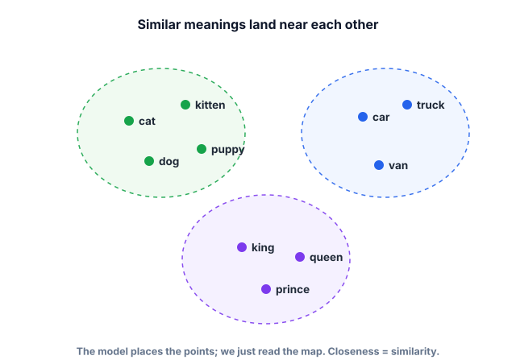
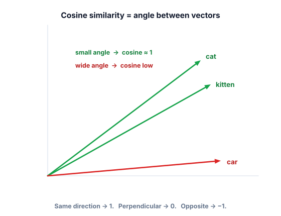

Embeddings: meaning as vectors
An embedding turns a piece of text into a long list of numbers.
Texts with similar meaning get similar lists.
So you can treat every text as a point on a map, where close points mean similar meaning.
To search, you turn the question into a point too and look at what is nearby.
Search, recommendations and RAG (retrieval-augmented generation, Track 3) all start here.
Imagine a giant school hall where every sentence is a student, and students stand closer together the more alike their meaning is. 'My flight was cancelled' and 'The airline scrapped my trip' stand shoulder to shoulder, while 'I like pizza' is across the room. Searching becomes 'walk to where the question stands and look at who is nearby'.
| In the picture | In the real system |
|---|---|
| A student standing somewhere in the hall | One text turned into a vector (a point in meaning space) |
| Standing shoulder to shoulder | High cosine similarity: the vectors point the same way |
| Walking to where the question stands | Embedding the question with the same embedding model |
| Looking at who is nearby | Nearest-neighbour search: return the top few closest texts |
Where the picture breaks. The real hall has hundreds of directions, not just left, right, forward and back, so 'nearby' can mean close in one sense and far in another. And close means similar wording and topic, not the same meaning: 'cancel my order' and 'don't cancel my order' can stand side by side.
Pick a question. The three closest texts light up, with their cosine similarity computed from the toy vectors.
Going deeper
This is the idea that makes search, RAG, recommendations, and clustering possible. Once you can turn meaning into numbers, you can do math on meaning — and a huge amount of applied AI is exactly that.
Why embeddings have to exist
Remember token ids from the last lesson: cat might be id 9061 and dog id 5044. Those numbers are just labels — they say nothing about meaning. 9061 isn’t “closer” to 5044 than to 200. So if you wanted to build a search that knows “a small dog” is related to “a puppy,” raw ids are useless: they only match when the exact same word appears.
We need a different kind of number — one where similar meanings get similar values. Then “find related text” becomes “find nearby numbers,” which a computer can do instantly over millions of items. That representation is called an embedding, and it’s the quiet workhorse under semantic search, RAG (Track 3), deduplication, recommendations, and clustering.
An embedding is a list of numbers (a vector) that represents a piece of text’s meaning. Each position in the list is a dimension; real text embeddings have hundreds to thousands of them (e.g. 384, 768, 1536). An embedding model is a neural network trained so that texts with similar meaning get vectors that point in similar directions. You can picture each vector as a point in a high-dimensional “meaning space.”

Here’s the payoff, drawn in 2-D (real space has many more dimensions, but the intuition is identical): things that mean similar stuff cluster together.

Measuring “similar”: cosine similarity
If meaning is direction in space, then two texts are similar when their vectors point the same way. The standard way to measure that is cosine similarity: the cosine of the angle between two vectors. It ranges from +1 (same direction — very similar), through 0 (perpendicular — unrelated), to −1 (opposite). It looks only at direction, not length, which is exactly what we want.

The formula is just the dot product divided by the lengths — you don’t need to memorize it, but seeing it once helps:
# cosine(A, B) = (A · B) / (|A| × |B|)
# A · B = a1*b1 + a2*b2 + ... (the "dot product")
# |A| = sqrt(a1^2 + a2^2 + ...) (the vector's length)Cosine similarity explorer
Pick two words (each has a toy 2-D vector). See the angle between them and the cosine score. Try a similar pair, then a very different one.
Toy 2-D vectors are for intuition. Here’s the real thing with a small, free, open-source embedding model (no API key, runs on Colab’s free tier):
!pip install sentence-transformers
from sentence_transformers import SentenceTransformer, util
model = SentenceTransformer("all-MiniLM-L6-v2") # tiny, free, 384-dim vectors
sentences = [
"How do I reset my password?", # 0
"I forgot my login credentials.", # 1 (same idea, different words)
"What time does the store close?", # 2 (unrelated topic)
]
emb = model.encode(sentences)
print("0 vs 1 (paraphrase):", float(util.cos_sim(emb[0], emb[1]))) # ~0.6–0.7, high
print("0 vs 2 (unrelated):", float(util.cos_sim(emb[0], emb[2]))) # ~0.1, lowNotice sentence 0 and 1 share almost no words, yet score high — because the model captures meaning, not word overlap. That single property is why embedding search beats old keyword search for questions phrased in the user’s own words.
Assume a software company has 1,200,000 help articles and splits each into about 5 chunks. You embed each chunk with all-MiniLM-L6-v2, which outputs 384-dimensional vectors (model card).
- Vector count. 1.2M x 5 = 6,000,000 vectors.
- Raw storage. 6,000,000 x 384 dimensions x 4 bytes (float32) = 9,216,000,000 bytes, about 9.2 GB. Stored as int8 it is about 2.3 GB, usually with a small recall loss you should measure.
- Brute-force search cost. One query against every vector is 6,000,000 x 384 = about 2.3 billion multiply-adds. Fine for a batch job, too slow for thousands of queries a second. This is why vector databases use approximate nearest-neighbour indexes (HNSW, IVF) that check only a small slice.
- Normalise once. Scale every vector to length 1 at ingest. Then cosine similarity equals the dot product and the index can use the cheaper operation.
- Embedding time. At an assumed 1,000 chunks/second on one GPU, 6M chunks take 6,000 seconds, about 1.7 hours. Re-embedding happens every time you change the embedding model, so version your vectors with the model name.
- Sanity check. Take 200 real user questions with known correct articles and measure recall@10 before launch. A paraphrase test like the lesson's password example is the quickest smoke test.
Track 3 is built on what you just learned: embed all your documents once and store the vectors; at question time, embed the question and find the document vectors with the highest cosine similarity. “Find relevant text” becomes “find nearby vectors.” Everything else in RAG is refinements on this core.
- Token ids are arbitrary labels; embeddings are meaningful vectors where similar meaning → similar direction.
- An embedding model turns text into one vector (hundreds–thousands of dimensions) — a point in “meaning space.”
- Cosine similarity measures the angle between vectors: +1 similar, 0 unrelated, −1 opposite.
- Embeddings capture meaning, not word overlap — paraphrases with no shared words still score high.
- This is the engine of semantic search and RAG: store doc vectors, embed the query, retrieve nearest by cosine.
You embed three texts. Which pair will have the highest cosine similarity?
Two sentences with no shared words can still score as similar. Why?
You switch from embedding model A to model B for new documents but keep the old vectors from model A in the same index. What happens?
1. Compute the cosine similarity of A = [1, 0] and B = [1, 1] by hand. (Hint: dot = 1; |A| = 1; |B| = √2.) What angle does that correspond to?
2. In Colab, embed five FAQ questions and one user query, then print the most similar FAQ. You just built a mini semantic search.
3. Explain to a teammate why embedding search finds “How do I cancel?” when the user types “I want to stop my subscription,” but keyword search might not.
▸ Show solutions & reasoning
1. cosine = dot / (|A|·|B|) = 1 / (1 · √2) = 1/√2 ≈ 0.707, which is the cosine of 45°. So [1,0] and [1,1] are “moderately similar” — they share a direction component but aren’t identical. Doing one of these by hand cements that cosine really is just the angle.
2. The pattern:
from sentence_transformers import SentenceTransformer, util
m = SentenceTransformer("all-MiniLM-L6-v2")
faqs = ["How do I reset my password?", "How do I cancel my plan?",
"Where are my invoices?", "How do I add a teammate?", "Is there a mobile app?"]
query = "I want to stop my subscription"
fe = m.encode(faqs); qe = m.encode(query)
scores = util.cos_sim(qe, fe)[0]
best = int(scores.argmax())
print(faqs[best]) # -> "How do I cancel my plan?"The query and the right FAQ share no words, yet it wins — because you ranked by meaning. That’s a working semantic search in eight lines.
3. “Cancel” and “stop my subscription” barely overlap as strings, so keyword search (which matches words) can miss it. But they’re close in meaning, so their embeddings point the same way and cosine similarity ranks the cancel FAQ at the top. Embeddings match intent; keywords match spelling.
Why hundreds of dimensions? Meaning is many-faceted: topic, sentiment, formality, tense, entities, and far more. Each dimension can capture a slice of that. With only two dimensions (our pictures), unrelated concepts get forced near each other for lack of room; with hundreds, the model has space to separate “financial bank” from “river bank” from “bank shot in pool.” You can’t visualize 768-D, but every concept from the 2-D pictures — clusters, direction, cosine — carries over unchanged.
Cosine vs dot product vs Euclidean. Three common ways to compare vectors. Cosine looks at angle only (ignores length) and is the default for text similarity. The dot product factors in length too, and is identical to cosine when vectors are normalized to length 1 — which is why many systems normalize embeddings up front and then use the faster dot product.
Euclidean distance measures straight-line distance between points; it ranks similarly to cosine for normalized vectors. For Track 3, the practical rule is: normalize your embeddings, then cosine and dot product agree, and your vector database can use whichever is fastest. The concept you must carry forward is unchanged — closeness in this space means closeness in meaning.
You’ve now got tokens (the units), embeddings (their meaning), and next-token prediction (the engine). The remaining question about the engine is one of capacity: how much can a model hold in mind at once, and how does it decide which earlier words matter? That’s context windows and attention.
labs/03_rag_local.pyFree and offline once set up: Ollama with qwen2.5:7b, plus the packages in labs/README.md. From the course folder:
python labs/03_rag_local.pyWhat to look for: Watch the MiniLM vectors being created and the DuckDB array_cosine_similarity scores next to the FAISS scores for the same query; they should match, which shows cosine on normalised vectors is just a dot product. Rephrase a question with no shared words and see the right chunk still rank high, then compare with the hand-rolled BM25 ranking, which needs word overlap.
Small samples: these labs use 5 to 20 cases so they run in minutes on a laptop. Where they report a rate, they print n and a 95% Wilson interval. Read them as a demonstration of the mechanism, not as a measured rate for your system; for that you need hundreds of cases and several seeds.
▸ Recorded output (our run, 2026-11-03, qwen2.5:7b on a laptop GPU)
out of the top 3. On this tiny corpus dense already wins; hybrid earns its keep on big corpora full of
near-identical codes (SKUs, error ids) that embeddings blur. Never assume: measure hit@k (lab 06).
5) Grounded answers with citations, and a refusal when retrieval is weak
Q: I was charged twice for one order. What happens now?
A: If you were charged twice for one order, the duplicate payment is reversed automatically within 3 business days [pay-01#0]. If it is not reversed after 3 business days, raise a billing ticket with both transaction ids.
citations=['pay-01#0'] all-cited-ids-were-retrieved=True
Q: Can I change my delivery address after the order has shipped?
A: No, you cannot change your delivery address after the order has shipped. According to [ship-03#0], the address can only be changed before the order is packed.
citations=['ship-03#0'] all-cited-ids-were-retrieved=True
Q: Do you deliver to Antarctica by drone?
A: I don't know based on our policies. (refused before calling the LLM: best cosine 0.27 < 0.35)
citations=[] all-cited-ids-were-retrieved=True
Look: every factual sentence carries an id you can check; the off-topic question is refused
cheaply by the retrieval threshold, so the model never gets a chance to make something up.Your numbers will differ a little run to run. Full log: labs/outputs. Source: labs/03_rag_local.py.
Warm-up. Normalise the vector [3, 4] to length 1, then compute its cosine similarity with [1, 0].
▸ Solution
Length = sqrt(9 + 16) = 5, so normalised = [0.6, 0.8]. Cosine with [1, 0] = 0.6 x 1 + 0.8 x 0 = 0.6 (both have length 1, so cosine is just the dot product). That angle is about 53 degrees.
Transfer. Your semantic search returns 'How do I reset my password?' for the query 'reset my router'. Why might that happen and what would you add?
▸ Solution
Both share the 'reset' intent, and a small general model can weight that shared action more than the object. Fixes: add keyword search (BM25) and fuse the two rankings so the word 'router' counts; add metadata filters (product = networking); try a stronger or domain-tuned embedding model; and measure on a golden set so you know the fix helped. Embeddings capture meaning, but not always the meaning you care about.
Stretch. Estimate the memory for 50 million 1,024-dimension float32 vectors, then propose two ways to make it fit on a 64 GB machine.
▸ Solution
50M x 1,024 x 4 bytes = 204.8 GB. Options: (1) quantise, int8 gives about 51 GB and product quantisation can go far lower; (2) use a model or setting with fewer dimensions (some models support shortened Matryoshka-style embeddings), for example 256 dimensions in float32 = 51 GB; (3) keep the index on disk with a disk-based ANN index. Whatever you pick, measure recall@k against the full-precision baseline before switching.
Junior What is an embedding and how is it used in search?
▸ Model answer
An embedding is a vector of numbers that represents the meaning of a text. An embedding model is trained so similar meanings get vectors pointing in similar directions. For search, you embed all documents once and store the vectors. At query time you embed the question and find the stored vectors with the highest cosine similarity. That finds paraphrases with no shared words, which keyword search misses.
Mid Cosine similarity, dot product, or Euclidean distance: which do you use and why?
▸ Model answer
For text embeddings the default is cosine, because it compares direction and ignores length. In practice I normalise vectors to length 1 at ingest; then cosine and dot product give identical rankings and the dot product is cheaper, and Euclidean distance ranks the same way too. The real rule is to use the metric the embedding model was trained with, which the model card usually states, and to keep it consistent between ingest and query.
Senior How would you choose and roll out a new embedding model for a production RAG system with 100 million chunks?
▸ Model answer
First build a golden set from real queries with labelled relevant chunks, and score candidates offline on recall@k and nDCG, plus latency and cost per million chunks. Check language coverage and max input length against our chunk size. If a new model wins, re-embed into a new versioned index in the background, dual-write new documents, shadow-query both indexes and compare, then switch traffic gradually. Vectors from different models cannot be mixed, so the cutover is index by index, with the old one kept for rollback.
In one line: An embedding is a meaning-to-numbers map, so 'similar meaning' becomes 'nearby points'.